Tehokas reduce
Funktionaalisen ohjelmoinnin kolme keskeisintä työkalua ovat
eittämättä korkeamman asteen funktiot map, reduce ja filter,
joista kullakin on omanlaisensa tehtävä. Näistä kuitenkin reduce
voittaa yleisyydessä kevyesti.
Esittelen tässä postauksessa funktionaalisten kielten perusteisiin
kuuluvana asiana kuinka nämä funktiot voitaisiin kirjoittaa ja
sitten, miten reduce voi korvata sekä map-, että
filter-funktiot.
map
Funktio map on niin klassinen työväline listojen käsittelyssä,
että se tuntuu uponneen kertaheitolla kaaliin. Matemaattisesti
map ei ole paljoa muuta kuin funktion soveltaminen kokonaiseen
joukkoon, usein kirjoitettuna näin:
Funktionaaliset kielet pelaavat jonojen, usein listojen parissa.
Siispä matemaattinen joukkonotaatio ja joukkojen kanssa
puljautuminen siirtyy listoiksi. Clojure osaa toki soveltaa
map-funktiota joukkoihinkin, koska joukot toteuttavat yleisemmän
jonoabstraktion.
map ottaa siis tavallisesti kaksi argumenttia; ensin käytettävän
funktion ja toisena kokoelman alkioita, joihin funktiota
sovelletaan. Clojuressa kokoelmia saa toimittaa mielivaltaisen
monta. Tällöin kustakin joukosta poimitaan kerralla yksi
argumentti annettavaksi funktiolle.
Funktionaaliseen tapaan kirjoitamme toteutukset rekursiiviseen tapaan.
(defn map [fun coll] (loop [fun fun, coll (seq coll), acc ()] (if-let [x (first coll)] (recur fun (rest coll) (concat acc (list (fun x)))) acc))) (defn map' [fun coll] (if-let [x (first coll)] (cons (fun x) (map' fun (rest coll)))))
Tässä on kaksi naiivia, perustason esimerkkiä, miten map:n voisi
toteuttaa. Ensimmäinen käyttää rekursiivisuuteen Clojuren
toteuttamaa loop-recur -rakennetta, jolla häntärekursio saadaan
kuriin. Tuloksena on myös hieman rumempaa koodia.
Toinen tapa on perinteisempi funktionaalinen tapa, jota
Haskell-ihmiset varmasti muistavat kehua. Rakennamme hyvin
perinteisellä cons-metodilla saman listan. cons eli
construct lisää ensimmäisen argumenttinsa toisen argumentin
alkuun.
Haskellissa on vastaavanlainen listojen rakennusmenetelmä, eli
lyhyt oppimäärä: . Kaksoispiste
: toimii konstruktorina. Tästä sitten rekursiivisesti voimme
sanoa, että on sama lista kuin .
Ylimääräiset sulut voimme näet jättää pois tässä yhteydessä.
Yhtä kaikki, JVM ei tue häntärekursiota, eli jälkimmäinen
menetelmä kannattaa suosiolla unohtaa. Liian isojen kokoelmien
kanssa kutsupino kasvaa ylitse. Clojure valitsi eksplisiittisen
merkinnän, loop--recur, jolla optimoitavissa oleva rekursio
voidaan ilmaista. Clojuren oikea map-toteutus käyttää laiskoja
listoja ja niiden kanssa käytettävää makrorakennetta, ja se on
kokonaan toisennäköinen.
filter
Kokoelman suodatus epäkelvon aineksen pyyhkimiseksi on myös eräs
hyvin yleinen probleema. filter jättää siis kaikki ne alkiot
kokoelmasta jäljelle, joille predikaatti antaa toden.
Ohessa seuraa edellistä map-koodia mukaileva ratkaisu.
Pilkullinen versio on taasen se naivi esitys matemaattisesta
ideasta taustalla. Jos alkio täyttää ehdon, otetaan se mukaan ja
haetaan sitten loput filtteröidyt alkiot uuden kutsun voimin. Eri kätevää.
(defn filter [pred coll] (loop [pred pred, coll coll, acc ()] (if-let [x (first coll)] (if (pred x) (recur pred (rest coll) (concat acc (list x))) (recur pred (rest coll) acc)) acc))) (defn filter' [pred coll] (if-let [x (first coll)] (if (pred x) (cons x (filter' pred (rest coll))) (filter' pred (rest coll)))))
reduce
Reduktiot kokoelmista yhdeksi skalaariksi. Yleisiä ongelmia.
Haskellissa foldl, Rubyssä inject ja muissa kielissä reduce
tekee homman.
reduce tarvitsee kahden muuttujan funktion, jolle se syöttää
aina uuden alkion kokoelmasta. Kertymämuuttuja alustetaan yleensä
funktiolle ominaisen neutraalialkion kanssa: yhteenlaskun
tapauksessa 0 on luonnollinen, tulon kanssa 1, ja sitä rataa.
Kun ovelana käytämme alkuarvoa x0 myös kertymämuuttujana, saamme
itse asiassa aikaan kaikkein sievintä koodia:
(defn reduce [fun x0 coll] (if-let [x (first coll)] (recur fun (fun x0 x) (rest coll)) x0))
Kaikilla näillä funktioilla on määrittelyssä yhteisiä piirteitä:
kaikista otetaan ensialkio talteen, ja jos ei saada sellaista niin
rekursio lopetetaan (joukko coll on selvästi tyhjä siinä
pisteessä).
reduce voittaa
Pienellä notkeudella tutkikaamme, miten map- ja
filter-funktiot voisi toteuttaa reduce:n avulla. Meidän
tarvitsee vain kirjoittaa sopivanlainen funktio ja alkuarvo
lähetettäväksi.
map reduce:n avulla
map kuvaa funktiolla joukon toisenlaiseksi joukoksi:
reduktio-funktiomme voisi olla tämännäköinen:
(defn mapr [fun coll] (let [f (fn [xs x] (concat xs (list (fun x))))] (reduce f () coll)))
Vaikka reduce toimii idealla "kokoelma yhdeksi skalaariksi", on
Clojuressa skalaarin käsite hieman häilyvä. Funktiomme palauttaa
itse asiassa koko listan plus yhden uuden (ja käsitellyn)
alkion, täten replikoiden map-funktion toiminnallisuuden.
filter reduce:n avulla
Samalla menettelyllä kirjoitetaan filter.
(defn filterr [pred coll] (let [f (fn [xs x] (if (pred x) (concat xs (list x)) xs))] (reduce f () coll)))
Syntyy tavallaan jopa alkuperäistä sievempää koodia.
Mitä tästä opimme?
Että nyt kaikki kirjoittamaan reduktioita? Ei. Yksi asia, missä
map ja filter eroavat kovasti tosielämän reduce:sta on
niiden laiskuus. Laiskuutta en tässä voinut demonstroida, mutta
reduce on määritelmältään epälaiska funktio. Sen on saatava
evaluoitua kaikki annetut argumenttinsa, jotta se pääsee
suoriutumaan.
Tärkeämpää on ottaa opikseen näistä esimerkeistä reduce:n voima.
Esimerkkinä useiden kuvausten yhdistäminen: ennen tätä oppimäärää
olisin luultavasti tyytynyt siihen seikkaan, että clojuren oma
merge-funktio toimii vain kahden kuvauksen kanssa, ja olisin
kirjoittanut loop-recur-rakenteen yhdistämään mielivaltaisen
monta kuvausta keskenään. Nyt voin kutsua yksinkertaisemmin:
(reduce merge my-maps), ja siirtyä muihin ongelmiin.
Se, että reduce:a aina opetetaan käyttämällä oikeita skalaareja,
saattaa hämätä itse kutakin. Kaikki on mahdollista, vaikkapa
funktiokompositiokin, saada aikaan reduce:n voimin.